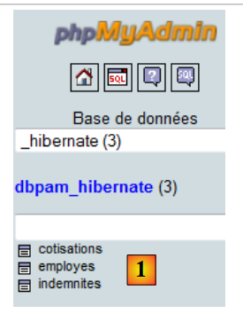
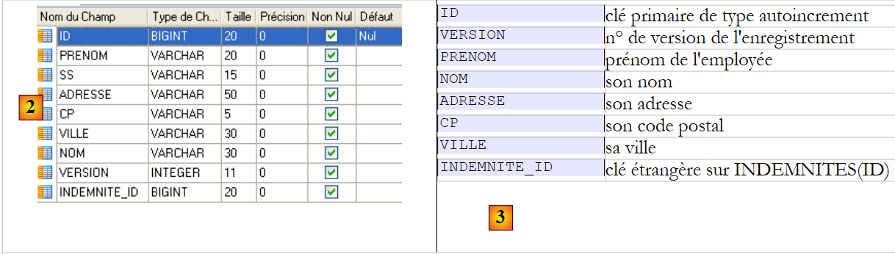

18. Case Study: Struts 2 / Tiles / Spring / Hibernate / MySQL
We will conclude our introduction to Struts with a case study. To be realistic, the example we will examine will be significantly more complex than those covered previously. For beginners, it is likely best to solidify your understanding of the basics of Struts 2 through personal projects before tackling this case study.
The application will use a layered architecture:
 |
The [business], [DAO], and [JPA/Hibernate] layers will be provided to us in the form of a JAR archive, whose features we will detail. Spring will handle the integration of these layers. The [web] layer will be implemented using Struts 2.
 |
18.1. The Problem
We propose to write a web application to generate pay stubs for child care providers employed by a municipality’s “Early Childhood Center.”

This case study is presented in the document:
Introduction to Java EE 5 available at the URL [http://tahe.developpez.com/java/javaee]
In this document, the case study is implemented using the following multi-tier architecture:
 |
The [web] layer is implemented using the JSF (Java Server Faces) framework. We will adopt this same architecture by implementing the [web] layer with Struts 2. To demonstrate the benefits of layered architectures, we will use the JAR archive containing the [business, DAO, JPA] layers from the JSF version and connect it to a [web / Struts 2] layer:
 |
We will present the following components of the [business, DAO, JPA] layers:
- The [web] layer interfaces with the [business] layer. We will present this interface.
- The [JPA] layer accesses a database. We will present it.
- The [JPA] layer transforms rows from the database tables into JPA entities that are used by all layers of the application. We will present them.
- The [business, DAO, JPA] layers are instantiated by Spring. We will present the configuration file that performs this instantiation and integration.
18.2. The Database
We will use the following MySQL database [dbpam_hibernate]:

- In [1], the database has three tables:
- [employees]: a table that records the employees of a daycare center
- [contributions]: a table that stores social security contribution rates
- [indemnites]: a table that stores information used to calculate employees' pay
[employees] table
 |
- In [2], the employees table, and in [3], the meaning of its fields
The table's contents could be as follows:

Table [contributions]
 |
- In [4], the contributions table, and in [5], the meaning of its fields
The table contents could be as follows:

Table [indemnites]
 |
- in [6], the allowances table, and in [7], the meaning of its fields
The table contents could be as follows:

Exporting the database structure to an SQL file yields the following result:
18.3. JPA Entities
In the following architecture
 |
The [Jpa] layer acts as a bridge between the objects handled by the [dao] layer and the rows in the database tables handled by the Jdbc driver. The rows read from the database tables are transformed into objects called Jpa entities. Conversely, during writing, JPA entities are converted into table rows. These entities are handled by all layers, particularly the web layer. We therefore need to understand them:
The [Employee] entity represents a row in the [Employees] table
IDprimary key of type autoincrementVERSIONrecord version numberFIRST_NAMEemployee's first nameLAST NAMEher last nameADDRESSher addressZIPhis/her zip codeCITYhis/her cityINDEMNITY_IDforeign key on INDEMNITIES(ID)

The [Employee] entity is as follows:
package jpa;
...
@Entity
@Table(name="EMPLOYEES")
public class Employee implements Serializable {
@Id
@GeneratedValue(strategy = GenerationType.AUTO)
private Long id;
@Version
@Column(name="VERSION", nullable=false)
private int version;
@Column(name="SS", nullable=false, unique=true, length=15)
private String SS;
@Column(name="NAME", nullable=false, length=30)
private String lastName;
@Column(name="FIRST_NAME", nullable=false, length=20)
private String firstName;
@Column(name="ADDRESS", nullable=false, length=50)
private String address;
@Column(name="CITY", nullable=false, length=30)
private String city;
@Column(name="ZIP", nullable=false, length=5)
private String zipCode;
@ManyToOne
@JoinColumn(name="INDEMNITY_ID", nullable=false)
private Indemnite indemnity;
public Employee() {
}
public Employee(String SS, String lastName, String firstName, String address, String city, String zipCode, Indemnity indemnity) {
setSS(SS);
setLastName(lastName);
setFirstName(firstName);
setAddress(address);
setCity(city);
setZipCode(zipCode);
setAllowance(allowance);
}
@Override
public String toString() {
return "jpa.Employee[id=" + getId()
+ ",version="+getVersion()
+",SS="+getSS()
+ ",lastName="+getLastName()
+ ",firstName="+getFirstName()
+ ",address="+getAddress()
+",city="+getCity()
+",zipCode="+getZipCode()
+",index="+getIndemnity().getIndex()
+"]";
}
// getters and setters
...
}
We will ignore annotations @ intended for the [Jpa] layer. The various fields of the class reflect the various columns of the [EMPLOYEES] table. The indemnities field (line 29) reflects the fact that the [EMPLOYEES] table has a foreign key on the [INDEMNITIES] table. When we manipulate an employee, we also manipulate their indemnities.
The [Indemnite] entity is the object representation of a row in the [INDEMNITES] table:
IDauto-increment primary keyVERSIONrecord version numberBASE_HEUREcost in euros for one hour of on-call dutyDAILY_MAINTENANCEdaily allowance in eurosMEAL_DAYMeal allowance in euros per day of carePAID_LEAVE_ALLOWANCESPaid leave allowances. This is a percentage to be applied to the base salary.

The [Indemnite] entity is as follows:
package jpa;
...
@Entity
@Table(name="INDEMNITIES")
public class Indemnite implements Serializable {
@Id
@GeneratedValue(strategy = GenerationType.AUTO)
private Long id;
@Version
@Column(name="VERSION", nullable=false)
private int version;
@Column(name="INDEX", nullable=false, unique=true)
private int index;
@Column(name="BASE_TIME", nullable=false)
private double baseTime;
@Column(name="DAILY_MAINTENANCE", nullable=false)
private double dailyMaintenance;
@Column(name="MEAL_DAY", nullable=false)
private double dailyMeal;
@Column(name="PAY_DIFFERENTIAL", nullable=false)
private double sick_pay;
public Indemnity() {
}
public Indemnity(int index, double baseHour, double dailyMaintenance, double dailyMeal, double CPAllowances){
setIndex(index);
setBaseHour(baseHour);
setDailyMaintenance(dailyMaintenance);
setDailyMeal(dailyMeal);
setCPAllowances(CPAllowances);
}
@Override
public String toString() {
return "jpa.Indemnity[id=" + getId()
+ ",version="+getVersion()
+",index="+getIndex()
+",baseHour="+getBaseHour()
+",daily maintenance"+getDailyMaintenance()
+",day meal="+getDayMeal()
+",CP allowances="+getCPAllowances()
+ "]";
}
// getters and setters
....
}
The various fields of the class reflect the various columns of the [INDEMNITIES] table.
The [Cotisation] entity is the object representation of a row in the [COTISATIONS] table:
IDprimary key of type autoincrementVERSIONrecord version numberSECUsocial security contribution rate (percentage) socialPENSIONpension contribution rateCSGDcontribution rate for the general social Generalized DeductibleCSGRDScontribution rate for the and the contribution to the repayment social debt

The [Contribution] entity is as follows:
package jpa;
...
@Entity
@Table(name="COTISATIONS")
public class MembershipFee implements Serializable {
@Id
@GeneratedValue(strategy = GenerationType.AUTO)
private Long id;
@Version
@Column(name="VERSION", nullable=false)
private int version;
@Column(name="CSGRDS", nullable=false)
private double csgrds;
@Column(name="CSGD", nullable=false)
private double csgd;
@Column(name="SECU", nullable=false)
private double secu;
@Column(name="PENSION", nullable=false)
private double retirement;
public Contribution() {
}
public Contribution(double employerContribution, double employeeContribution, double socialSecurity, double pension){
setEmployerContribution(employerContribution);
setCsgd(csgd);
setSocialSecurity(socialSecurity);
setRetraite(retraite);
}
@Override
public String toString() {
return "jpa.Contribution[id=" + getId() + ",version=" + getVersion() + ",csgrds=" + getCsgrds() + "" +
",csgd="+getCsgd()+",secu="+getSecu()+",pension="+getPension()+"]";
}
// getters and setters
...
}
The different fields of the class reflect the different columns of the [INDEMNITES] table.
18.4. -based method for calculating a child care provider's salary
The web application we are going to write will allow us to calculate an employee's salary based on three pieces of information:
- the employee's index
- the number of days worked
- the number of hours worked
Here is a screenshot of a salary calculation:
We will now present the method for calculating a child care provider’s monthly salary. This is not intended to be the method used in real life. As an example, we will use the salary of Ms. Marie Jouveinal, who worked 150 hours over 20 days during the pay period.
The following factors are taken into account: | | |
The base salary of the is given by the following formula : | | |
A certain amount of social security contributions must be deducted from this base salary : | | |
Total Social Security Contributions: | | |
In addition, the child care provider is entitled, for each day worked, to a as well as a meal allowance . As such, she receives the : | | |
In the end, the net salary to be paid to the child care provider is as follows: | |
18.5. The [business] layer interface
Let's take a look at the architecture of the application we're building:
 |
The [web / Struts 2] layer communicates with the interface of the [business] layer. This is as follows:
package business;
import java.util.List;
import jpa.Employee;
public interface IBusiness {
// get the pay stub
PayStub calculatePayStub(String SS, double hoursWorked, int daysWorked);
// list of employees
List<Employee> findAllEmployees();
}
- line 8: the method that will allow us to calculate an employee's salary
- line 10: the method that will allow us to populate the employee dropdown
The calculatePaystub method returns an instance of the following [Paystub] class:
package business;
import java.io.Serializable;
import jpa.Contribution;
import jpa.Employee;
public class Payroll implements Serializable {
// private fields
private Employee employee;
private Contribution contribution;
private PayrollItems payrollItems;
// constructors
public Payroll() {
}
public Payroll(Employee employee, Contribution contribution,
SalaryElements salaryElements) {
setEmployee(employee);
setContribution(contribution);
setPayComponents(payComponents);
}
// toString
@Override
public String toString() {
return "[" + employee + "," + contribution + ","
+ salaryElements + "]";
}
// getters and setters
...
}
The pay slip contains the following information:
- line 10: information about the employee whose salary is being calculated
- line 11: the various contribution rates
- line 12: salary components
The [ElementsSalaire] class is as follows:
package business;
import java.io.Serializable;
public class SalaryComponents implements Serializable{
// private fields
private double baseSalary;
private double socialSecurityContributions;
private double maintenanceAllowance;
private double mealAllowance;
private double netSalary;
// constructors
public ElementsSalary() {
}
public SalaryElements(double baseSalary, double socialContributions,
double maintenanceAllowance, double mealAllowance,
double netSalary) {
setBaseSalary(baseSalary);
setSocialContributions(socialContributions);
setMaintenanceAllowances(maintenanceAllowances);
setMealAllowances(mealAllowances);
setNetSalary(netSalary);
}
// toString
@Override
public String toString() {
return "[base salary=" + baseSalary + ",social security contributions=" + socialSecurityContributions + ",living allowance="
+ livingAllowance + ",mealAllowance=" + mealAllowance + ",netSalary="
+ netSalary + "]";
}
// getters and setters
...
}
- lines 8-12: salary components
18.6. The Spring configuration file
The integration of the [business, DAO, JPA] layers is handled by the following Spring configuration file:
<?xml version="1.0" encoding="UTF-8"?>
<beans xmlns="http://www.springframework.org/schema/beans" xmlns:xsi="http://www.w3.org/2001/XMLSchema-instance"
xmlns:tx="http://www.springframework.org/schema/tx"
xsi:schemaLocation="http://www.springframework.org/schema/beans http://www.springframework.org/schema/beans/spring-beans-2.0.xsd http://www.springframework.org/schema/tx http://www.springframework.org/schema/tx/spring-tx-2.0.xsd">
<!-- application layers -->
<!-- business layer -->
<bean id="business" class="business.Business">
<property name="employeeDao" ref="employeeDao"/>
<property name="contributionDao" ref="contributionDao"/>
</bean>
<!-- dao -->
<bean id="employeeDao" class="dao.EmployeeDao" />
<bean id="indemnityDao" class="dao.IndemnityDao" />
<bean id="contributionDao" class="dao.ContributionDao" />
<!-- JPA configuration -->
<bean id="entityManagerFactory" class="org.springframework.orm.jpa.LocalContainerEntityManagerFactoryBean">
<property name="dataSource" ref="dataSource" />
<property name="jpaVendorAdapter">
<bean class="org.springframework.orm.jpa.vendor.HibernateJpaVendorAdapter">
<property name="databasePlatform" value="org.hibernate.dialect.MySQL5InnoDBDialect" />
</bean>
</property>
<property name="loadTimeWeaver">
<bean class="org.springframework.instrument.classloading.InstrumentationLoadTimeWeaver" />
</property>
</bean>
<!-- the DBCP data source -->
<bean id="dataSource" class="org.apache.commons.dbcp.BasicDataSource" destroy-method="close">
<property name="driverClassName" value="com.mysql.jdbc.Driver" />
<property name="url" value="jdbc:mysql://localhost:3306/dbpam_hibernate" />
<property name="username" value="root" />
<property name="password" value="" />
</bean>
<!-- the transaction manager -->
<tx:annotation-driven transaction-manager="txManager" />
<bean id="txManager" class="org.springframework.orm.jpa.JpaTransactionManager">
<property name="entityManagerFactory" ref="entityManagerFactory" />
</bean>
<!-- exception translation -->
<bean class="org.springframework.dao.annotation.PersistenceExceptionTranslationPostProcessor" />
<!-- persistence -->
<bean class="org.springframework.orm.jpa.support.PersistenceAnnotationBeanPostProcessor" />
</beans>
We will not attempt to explain this configuration. It is necessary for the instantiation and integration of the [business, DAO, JPA] layers. Our web application, which will rely on these layers, must therefore adopt this configuration. Note that lines 32– –37 configure the JDBC properties of the database. Readers who wish to change the database must modify these lines.
For more information on this configuration, refer to the document Introduction to Java EE 5 available at the URL [http://tahe.developpez.com/java/javaee].